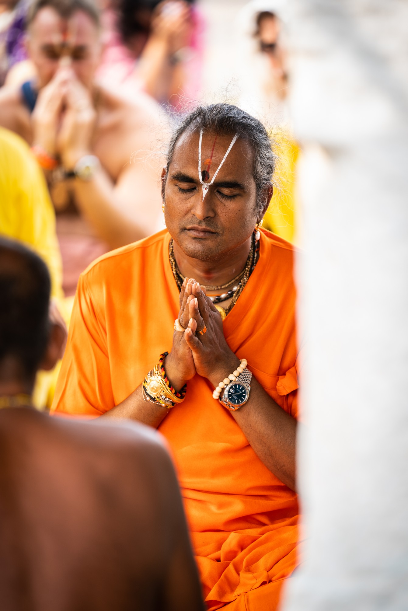
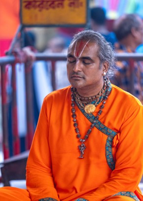
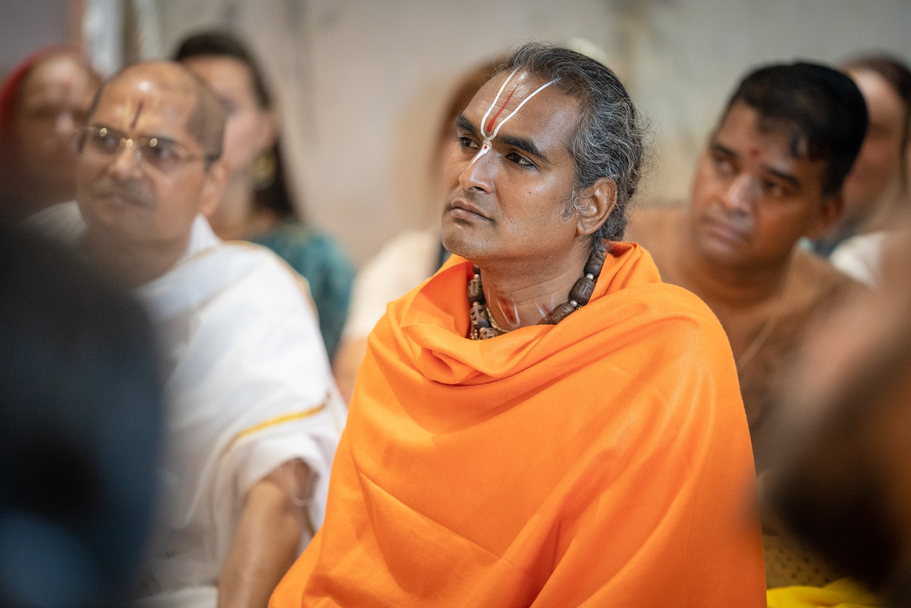
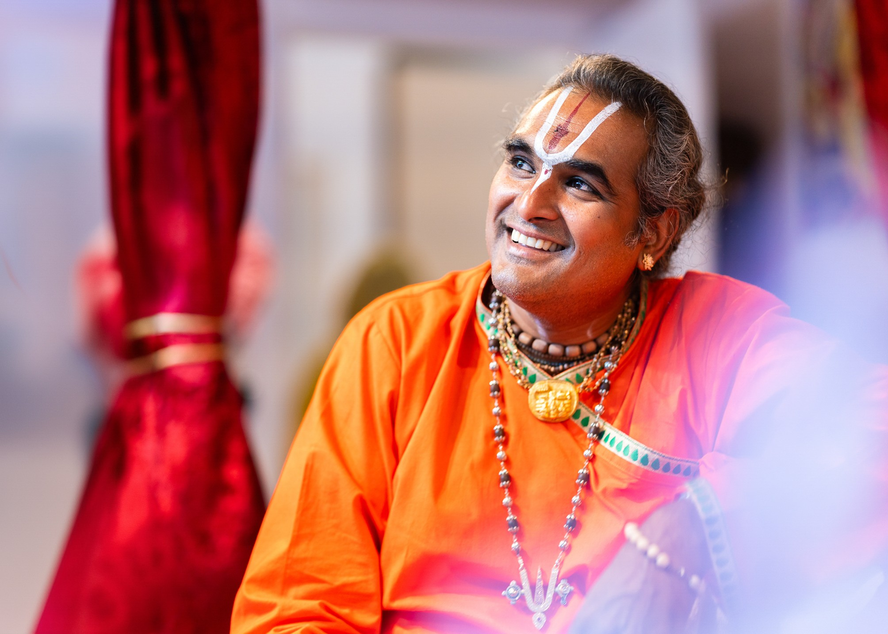
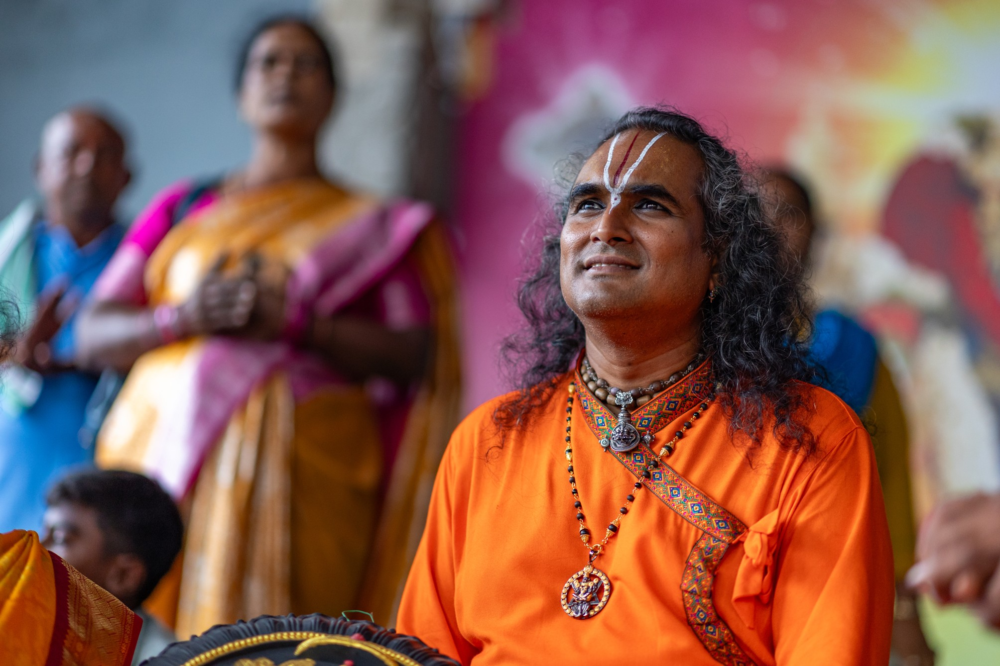
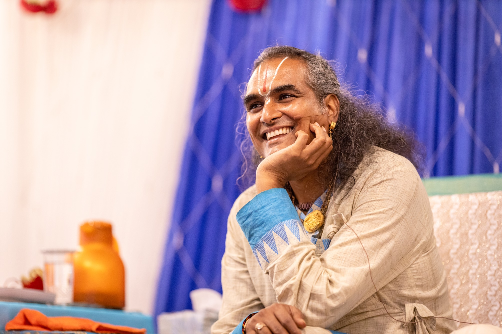

Wisdom & Inspiration
Stories, teachings, and reflections from the path of devotion

✦ FeaturedDevotion
Among all the paths described in the ancient scriptures — karma yoga, jnana yoga, raja yoga — the sages have called Bhakti the most direct, the most accessible, and the most joyful. But what makes devotion so powerful? And how do we cultivate it in modern life?
Read Full Article →Latest Articles

Yoga & MeditationEarly mornings carry a unique silence — the sandhya, the sacred junction between night and day. Discover how a consistent morning practice opens the heart to grace.

WisdomSpoken on a battlefield over 5,000 years ago, Lord Krishna's words to Arjuna speak with startling relevance to every challenge we face today.

CommunityThe company of like-minded seekers is not a luxury on the spiritual path — it is a necessity. Learn why satsang (sacred community) is considered one of the greatest blessings.

DevotionScience is now catching up to what sages have known for millennia: sacred chanting rewires the nervous system, quiets the mind, and opens the heart to joy.

FestivalsThis summer's Just Love Festival at Shree Peetha Nilaya promises to be the most expansive yet — three days of kirtan, yoga, retreats, fire ceremonies, and pure devotion.
A complete yoga system given by Paramahamsa Vishwananda, Atma Kriya integrates pranayama, meditation, and mantra into a daily practice that accelerates spiritual awakening.
Explore Topics